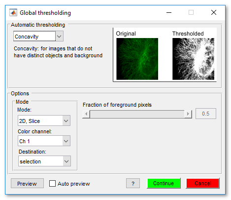
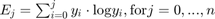
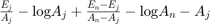
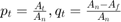
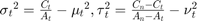
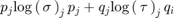
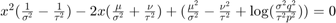
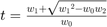
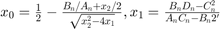
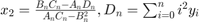

Global black-and-white thresholding
Perform global black-and-white thresholding of the dataset.
Back to Index --> User Guide --> Menu --> Tools
A demonstration of the global black-and-white thresholding is available in the following video:

https://youtu.be/mzfgxLvkGTI
Contents

CONCAVITY algorithm
- If the image does not have distinct objects and background, the MINIMUM and INTERMODES algorithms are not suitable.
- A good threshold may be found at the shoulder of the histogram.
- The shoulder location can be found based on the concavity of the histogram.
- Construct the convex hull H of the histogram y.
- Find the local maxima of H - y.
- Set t to the value of j at which the balance measure bj = Aj(An - Aj) is maximized
- The algorithm seems to work well in many cases, but in some cases it gives thresholds that are clearly unusable
Reference A. Rosenfeld and P. De La Torre, Histogram concavity analysis as an aid in threshold selection, IEEE Trans. Systems Man Cybernet., vol. 13, pp. 231-235, 1983
Acknowledgements Based on the HistThresh Toolbox by Antti Niemistö, Tampere University of Technology, Finland
ENTROPY algorithm
- One of several maximum entropy algorithms
- Divides the histogram of the image into two probability distributions, one representing the objects and one representing the background
- Choose t such that the sum of the entropies of these probability distributions is maximized
- Define the partial sums:

- Set t to the value of j at which an equiation below is maximized

Reference
- J. N. Kapur, P. K. Sahoo, and A. K. C. Wong, A new method for gray-level picture thresholding using the entropy of the histogram, Comput. Vision Graphics Image Process., vol. 29, pp. 273-285, 1985.
Acknowledgements Based on the HistThresh Toolbox by Antti Niemistö, Tampere University of Technology, Finland
INTERMEANS ITER algorithm
- An iterative algorithm that gives similar results as the OTSU algorithm
- Computationally less intensive than OTSU
- The algorithm starts with an initial guess for t
- Define the means μt and νt of the two classes
- Set t = [(μt + νt)/2] and recalculate μt and νt.
- Repeat until t has the same value in two consecutive iterations
- The obtained t may strongly depend on its initial value
- If the objects and background occupy comparable areas, use MEAN
- If the objects are small compared to the background, use INTERMODES.
References
- T. Ridler and S. Calvard, Picture thresholding using an iterative selection method, IEEE Trans. Systems Man Cybernet., vol. 8, pp. 630-632, 1978.
- H. J. Trussell, Comments on ?Picture thresholding using an iterative selection method?, IEEE Trans. Systems Man Cybernet., vol. 9, p. 311, 1979.
Acknowledgements Based on the HistThresh Toolbox by Antti Niemistö, Tampere University of Technology, Finland
INTERMODES algorithm
- An alternative to MINIMUM
- Assumes a bimodal histogram
- Find the two peaks (local maxima) yj and yk
- Set t to (j + k)/2
- Set t = [(μt + νt)/2] and recalculate μt and νt.
- Still unsuitable for images that have a histogram with extremely unequal peaks
Reference
- J. M. S. Prewitt and M. L. Mendelsohn, The analysis of cell images, in Ann. New York Acad. Sci., vol. 128, pp. 1035-1053, 1966
Acknowledgements Based on the HistThresh Toolbox by Antti Niemistö, Tampere University of Technology, Finland
MEAN algorithm
- Similar to the MEDIAN algorithm
- Instead of median, set t such that it is the integer part of the mean of all pixel values
- With the partial sum notation, t = Bn/An
- Does not take into account histogram shape, so obviously the results are suboptimal
Acknowledgements Based on the HistThresh Toolbox by Antti Niemistö, Tampere University of Technology, Finland
MEDIAN and PERCENTILE algorithms
- Assumes that the percentage of object pixels is known
- Set t to the highest gray-level which maps at least (100 - p)% of the pixels into the object category
- Not suitable if the object area is not know
- Problem: the algorithm is parametric
- Solution: set p = 50 so that t is the median of the distribution of pixel values
Reference
- W. Doyle, Operation useful for similarity-invariant pattern recognition, J. Assoc. Comput. Mach, vol. 9, pp. 259-267, 1962
Acknowledgements Based on the HistThresh Toolbox by Antti Niemistö, Tampere University of Technology, Finland
MINERROR algorithm
- Similar to the OTSU algorithm
- Views the histogram as an estimate of the probability density function of the mixture population (objects and background)
- Assumes a Gaussian mixture model, that is, A) the pixels in the two categories come from a normal distribution and B) the normal distributions may have different means as well as variances
- Define the following statistics:


- Set t to the value of j at which  is minumized
Reference
- J. Kittler and J. Illingworth, Minimum error thresholding, Pattern Recognition, vol. 19, pp. 41-47, 1986
Acknowledgements Based on the HistThresh Toolbox by Antti Niemistö, Tampere University of Technology, Finland
MINERROR ITER algorithm
- The iterative version of the MINERROR algorithm is computationally less intensive
- Find initial value for t using MEAN
- The integer part of the larger solution provides a new value t:

- Let w0, w1 and w2 denote the three terms
- Set 
- Recalculate all the terms using the new value of t and re-derive t
- Repeat until convergence
- This minimizes the number of misclassi?cations between the two normal distributions with the given means, variances, and proportions
- The algorithm fails to converge if the quadratic equation does not have a real solution
Reference
- J. Kittler and J. Illingworth, Minimum error thresholding, Pattern Recognition, vol. 19, pp. 41-47, 1986
Acknowledgements Based on the HistThresh Toolbox by Antti Niemistö, Tampere University of Technology, Finland
MINIMUM algorithm
- Assumes a bimodal histogram
- The histogram needs to be smoothed (using the three-point mean filter) iteratively until the histogram has only two local maxima
- Choose t such that yt - 1 > yt ? yt + 1
- Unsuitable for images that have a histogram with extremely unequal peaks or a broad and flat valley
Reference
- J. M. S. Prewitt and M. L. Mendelsohn, The analysis of cell images, in Ann. New York Acad. Sci., vol. 128, pp. 1035-1053, 1966
Acknowledgements Based on the HistThresh Toolbox by Antti Niemistö, Tampere University of Technology, Finland
MOMENTS algorithm
- Choose t such that the binary image has the same ?rst three moments as the gray-level image
- his is achieved by setting t such that At/An is the value of the fraction nearest to x0, where


Reference
- W. Tsai, Moment-preserving thresholding: a new approach, Comput. Vision Graphics Image Process., vol. 29, pp. 377-393, 1985
Acknowledgements Based on the HistThresh Toolbox by Antti Niemistö, Tampere University of Technology, Finland
OTSU algorithm
- Matlab implementation of the Otsu algorithm
- The t value is calculated using graythresh
Reference
- Otsu, N., "A Threshold Selection Method from Gray-Level Histograms," IEEE Transactions on Systems, Man, and Cybernetics, Vol. 9, No. 1, 1979, pp. 62-66.
Programming tips
This function is compatible with the batch scripting.
- Define parameters as a structure, where the names of the fields can be checked from the tooltips of the widgets
- Some of the parameters are optional
- use mibController.startController function, where the 3rd input is the defined structure with parameters
For example,
BatchOpt.colChannel = 2; % define color channel for thresholding BatchOpt.Mode = '3D, Stack'; % mode to use BatchOpt.Method = 'Otsu'; % thresholding algorithm BatchOpt.Destination = 'selection'; % [optional] destination layer, 'mask' or 'selection' BatchOpt.t = [1 1]; % [optional] time points, [t1, t2] BatchOpt.z = [10 20]; % [optional] slices, [z1, z2] BatchOpt.x = [10 120]; % [optional] part of the image, [z1, z2] BatchOpt.Orientation = 4; % [optional], dataset orientation obj.startController('mibHistThresController', [], BatchOpt); % start the thresholding
Back to Index --> User Guide --> Menu --> Tools